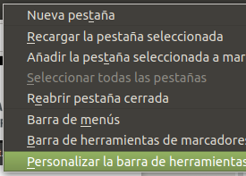
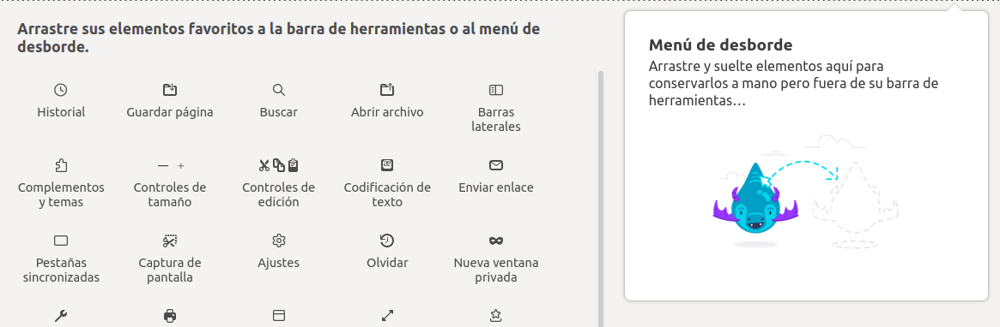
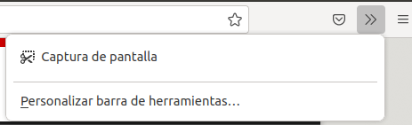
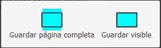

Laboratorio 1 de DEW, sesión 4: Preparación para la prueba individual
Atención: esta sesión se imparte antes de la tercera
Se estima que el tiempo necesario para realizar esta sesión con éxito supera las 4 horas. Esto se debe a la unión de muchas novedades que se suman a la propia actividad:
- Uso de virtuales de portal
- Uso del entorno de desarrollo integrado Eclipse
- Uso del contenedor de servlets Tomcat
La prueba individual de laboratorio consiste en la realización de unas actividades relacionadas con la producción, modificación y publicación de materiales para la web, en un proceso que incluye además la validación y captura de instantáneas.
- Tipos de materiales: scripts, hipertexto, hojas de estilo.
- Condiciones de realización: una hora, equipos LINUX (
desarrollo y servidor) de las virtuales de portal del DSIC, sin documentación ni acceso por red, con herramientas que incluyen:
- Un entorno de desarrollo Eclipse para JEE
- Bibliotecas Tomcat, ya configuradas en Eclipse
- Navegador web Firefox
- Servidor Tomcat
- Acceso a un validador y a un servidor de entrega, ambos en el portal
- Objetivo final: construir y entregar por web los archivos con las características indicadas, habiendo demostrado su correcto funcionamiento
mediante un despliegue en un servidor Tomcat
Modificaciones sobre este enunciado
Como las condiciones para la realización de la práctica y las del examen no son idénticas, y con el propósito de mantener el enunciado original sin cambios, deberemos adaptarnos mediante las siguientes modificaciones sobre la práctica:
- No disponemos de dos equipos llamados
desarrollo y servidor. El servidor será nuestra virtual de portal.
- La URL para el validador temporal (para esta sesión) será
http://dew-rgarcia-2122.dsicv.upv.es:8080/vnu/
- Para el examen se proporciona el directorio de Tomcat con sus bibliotecas para Eclipse, y unas ilustraciones con los dígitos del
0 al 9 (comprimido aquí)
- No se realiza la entrega final del material.
Material inicial y aspecto final
Además del archivo con las ilustraciones dispones de estos tres items:
- La página de hipertexto (update: completada) (
ejercicio.html).No la descargues como "Página web, completa" porque el navegador alterará su contenido.
- Éste es su aspecto (como imagen): Terminada
- La única documentación que puedes consultar es el PDF sobre Creación y Publicación Básicas (no pierdas mucho tiempo con él)
Procedimiento paso a paso
La mayoría de las acciones se realizan en el equipo desarrollo, aunque puedan aparecer detalles específicos.
- Crear en Eclipse un proyecto web dinámico llamado
sol
- Modificar el documento base según indicaciones
- Cambios en otros recursos (CSS, imágenes, ...)
- Exportar todo lo necesario como archivo
WAR y publicar en el directorio apropiado del servidor (servidor)
- Acceder por HTTP desde el navegador Firefox (en el equipo
desarrollo)
- Validar documento (seguir instrucciones)
En caso correcto, hacer una captura de página visible desde Firefox, con algo de complicación:
- Como la operación
Captura de pantalla no aparece en el menú, el primer paso es añadirla:
  
- Pulsando el botón derecho sobre la barra de herramientas, elegimos la operación de
Personalizar... (primera ilustración)
- Arrastramos el icono que representa la operación de
Captura de pantalla al área derecha, que permitirá el acceso a través del botón >> (menú de desborde) (segunda ilustración)
- Ahora ya lo podemos seleccionar (tercera ilustración) en la lista
>> (a la derecha de la viñeta de URL del navegador).
- La operación permite capturar una página completa (lo usaremos al final) o solo la parte visible en la ventana actual del navegador (lo usamos a continuación).

- Incorporar la captura de la página visible en la página y volver a publicar
Realizar ahora una captura de página completa desde Firefox
- Conectar con
entrega y subir el archivo WAR publicado y la captura de la página completa
Otras sesiones...
Puede que no estén todas disponibles
- Sesión 1
- Sesión 2
- Sesión 3
- Sesión 4
{kind=link}